| Institución | Fundación Universitaria del Área Andina |
| Asignatura | Desarrollo Web |
| Proyecto | Sistema Web de Votaciones – Festival de la Leyenda Vallenata 2027 |
| Entrega | N.º 3 · Módulo real de votaciones y API GET |
| Equipo | [Número o nombre del equipo] |
| Integrantes |
1. [Nombre completo del integrante 1] 2. [Nombre completo del integrante 2] 3. [Nombre completo del integrante 3] 4. [Nombre completo del integrante 4] |
| Fecha | 8 de noviembre de 2026 (fecha máxima de entrega: 9 de noviembre de 2026) |
| Tecnologías | Laravel 13 (PHP 8.3) · MySQL 8.4 · Docker · Bootstrap 5 |
Todos los enlaces son hipervínculos reales, de solo lectura, y se verificaron desde una ventana privada. El repositorio es público.
| Elemento | Información |
|---|---|
| Equipo e integrantes | [Equipo N.º / nombre] — [Integrante 1], [Integrante 2], [Integrante 3], [Integrante 4] |
| Repositorio | https://github.com/neyermotorola-boop/votaciones-festival Rama principal: main |
| README e instalación | https://github.com/neyermotorola-boop/votaciones-festival/blob/main/README.md |
| API GET | Ruta: GET /api/categorias/Código: routes/api.php y app/Http/Controllers/Api/CategoriaApiController.php Minuto del video: [mm:ss] |
| Control de duplicados |
app/Http/Controllers/PublicoController.php (método votar) ·
migración con la restricción única ·
app/Models/Voto.phpMinuto del video: [mm:ss] |
| Pruebas CP-01 a CP-10 | tests/Feature/Entrega3Test.php |
| Video | URL: [https://... enlace directo al video] · Duración total: [mm:ss, máximo 8:00] |
| Enlace adicional | No hay aplicación desplegada públicamente. La aplicación se ejecuta en localhost (Docker); se demuestra en el video y se reproduce con los comandos del README. |
| Demostración | Evidencia observable | Minuto real |
|---|---|---|
| Presentación del proyecto y del delegado | Identificación del equipo y de quien sustenta | [00:00] |
| Inicio de sesión y categorías | Autenticación y datos consultados | [00:45] |
| Voto válido | Selección, confirmación y registro | [01:30] |
| Segundo voto en la misma categoría | Bloqueo del duplicado | [02:30] |
| Voto en otra categoría | Participación permitida | [03:30] |
| Historial y administración | Consulta de registros | [04:15] |
| API GET | Endpoint y JSON con categorías y opciones | [05:00] |
| MySQL y código | Persistencia y componentes técnicos relevantes | [06:00] |
| Pruebas adicionales y cierre | Otras validaciones y conclusiones técnicas | [07:00] |
La Entrega N.º 2 dejó construida la estructura de datos del proyecto: edición → categoría → votación (subevento) → opción, junto con la autenticación de usuarios y el panel administrativo. En esta tercera entrega se implementó el módulo real de votaciones sobre esos mismos modelos y la misma base de datos MySQL, de modo que el equipo puede ahora consultar categorías y opciones, registrar un voto, validar restricciones, consultar la participación y exponer una API GET de consulta con respuesta JSON.
Objetivo. Integrar modelos, vistas, formularios, rutas, plantillas, persistencia y validaciones del servidor para construir un proceso de votación verificable.
| Funcionalidad | Resultado verificable |
|---|---|
| Categorías y opciones | Información dinámica desde MySQL asociada a la edición (Entrega 2: modelos Edicion, Categoria, Votacion, Opcion). |
| Autenticación | Se exige inicio de sesión para registrar un voto (login, registro y cierre de sesión de la Entrega 2). |
| Registro de voto | Seleccionar una opción, confirmar y guardar el voto real en MySQL (tabla votos ampliada con edición y categoría). |
| Regla de unicidad | Un voto por usuario, categoría y edición: validación del servidor + restricción única en MySQL. |
| Validaciones | Se rechazan categorías no habilitadas, votaciones cerradas, opciones que no corresponden y solicitudes no autorizadas (sin sesión o sin token CSRF). |
| Participación y administración | Página «Mis votos» para el usuario y consulta administrativa de todos los votos con filtros. |
| API GET | GET /api/categorias/ entrega categorías, votaciones y opciones desde MySQL en JSON. |
| Integridad | Transacción con bloqueo de la categoría y restricción única que rechaza solicitudes duplicadas simultáneas. |
Flujo: Iniciar sesión → Elegir categoría → Seleccionar una opción → Confirmar → Validar en el servidor → Registrar en MySQL.
Se partió de los modelos de la Entrega N.º 2 y se adaptó el modelo Voto, que ahora vincula usuario, edición, categoría, votación y opción. La edición y la categoría se guardan en el voto para poder aplicar la restricción de unicidad directamente en la base de datos.
La Entrega N.º 3 agregó una migración sobre la tabla existente de la Entrega N.º 2. Al aplicarla se completan los votos previos con su edición y categoría, y se crea la restricción única. Aplicada en MySQL:
2026_10_24_193951_create_votos_table ............................... [1] Ran 2026_11_08_000000_add_edicion_categoria_to_votos_table ............. [2] Randatabase/migrations/2026_11_08_000000_add_edicion_categoria_to_votos_table.php
Schema::table('votos', function (Blueprint $table) {
$table->foreignId('edicion_id')->nullable()->after('user_id')->constrained('ediciones')->cascadeOnDelete();
$table->foreignId('categoria_id')->nullable()->after('edicion_id')->constrained('categorias')->cascadeOnDelete();
});
// Completa los votos existentes con la categoría y la edición de su votación.
DB::statement('UPDATE votos SET categoria_id = (SELECT categoria_id FROM votaciones WHERE votaciones.id = votos.votacion_id)');
DB::statement('UPDATE votos SET edicion_id = (SELECT edicion_id FROM categorias WHERE categorias.id = votos.categoria_id)');
Schema::table('votos', function (Blueprint $table) {
$table->unsignedBigInteger('edicion_id')->nullable(false)->change();
$table->unsignedBigInteger('categoria_id')->nullable(false)->change();
// Regla central: un voto por usuario, categoría y edición
$table->unique(['user_id', 'edicion_id', 'categoria_id'], 'votos_unico_usuario_edicion_categoria');
});
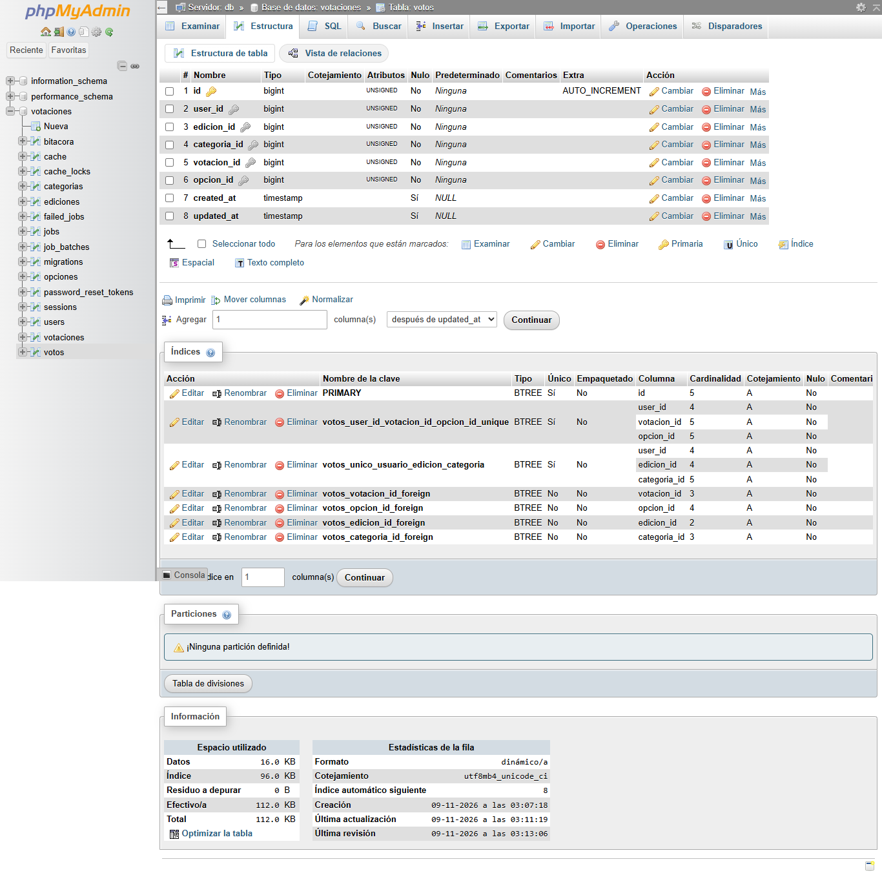
votos en MySQL (phpMyAdmin). Se ven las columnas edicion_id y categoria_id y el índice único votos_unico_usuario_edicion_categoria sobre (user_id, edicion_id, categoria_id). Demuestra que la regla de unicidad está garantizada en la base de datos.| Ruta | Acción | Vista / respuesta |
|---|---|---|
GET / · /ediciones · /categorias/{id} | Consulta pública de ediciones y categorías | Blade (datos de MySQL) |
GET /votaciones/{id} | Opciones de la votación y estado de participación del usuario | votacion.blade.php |
POST /votaciones/{id}/confirmar | Confirmación previa (requiere sesión) | confirmar.blade.php |
POST /votaciones/{id}/votar | Registra el voto (CSRF, sesión, validaciones) | Redirección con mensaje |
GET /mis-votos | Categorías votadas y pendientes del usuario | mis-votos.blade.php |
GET /admin/votos | Consulta administrativa con filtros (rol administrador) | admin/votos/index.blade.php |
GET /api/categorias/ | API de consulta en JSON | JSON |
El método votar se ejecuta dentro de una transacción que bloquea la fila de la categoría. De esta forma, dos solicitudes simultáneas del mismo usuario se procesan una detrás de otra: la segunda encuentra el voto de la primera y se rechaza. Si aun así una solicitud lograra pasar las validaciones, la restricción única de MySQL lanza una excepción que se captura y se informa como voto duplicado.
try {
$error = DB::transaction(function () use ($votacion, $datos, $user) {
// Bloqueo de la categoría: serializa las solicitudes simultáneas del mismo usuario.
$categoria = Categoria::whereKey($votacion->categoria_id)->lockForUpdate()->firstOrFail();
$votacion = Votacion::whereKey($votacion->id)->firstOrFail();
if (! $categoria->activa) { return 'Esta categoría no está habilitada para votar.'; }
if (! $votacion->estaAbierta()) { return 'Esta votación no está abierta.'; }
$opcion = Opcion::where('votacion_id', $votacion->id)->find($datos['opcion_id']);
if (! $opcion) { return 'La opción no pertenece a esta votación.'; }
if (Voto::where('user_id', $user->id)->where('categoria_id', $categoria->id)->exists()) {
return self::YA_VOTO; // un voto por usuario, categoría y edición
}
Voto::create([
'user_id' => $user->id, 'edicion_id' => $categoria->edicion_id,
'categoria_id' => $categoria->id, 'votacion_id' => $votacion->id, 'opcion_id' => $opcion->id,
]);
return null;
});
} catch (UniqueConstraintViolationException) {
$error = self::YA_VOTO; // última defensa: la restricción única de MySQL
}
| Control | Dónde se implementa |
|---|---|
| Sesión obligatoria | Middleware auth en las rutas de voto (routes/web.php); sin sesión se redirige a /ingresar. |
| Protección CSRF | Formularios con @csrf; el middleware rechaza solicitudes sin token con HTTP 419. |
| Categoría habilitada / votación abierta | votar() y Votacion::estaAbierta(). |
| Opción pertenece a la votación | Consulta Opcion::where('votacion_id', …) en votar(). |
| Unicidad usuario-categoría-edición | Validación en votar() + índice único en MySQL (migración). |
| Concurrencia | Transacción con lockForUpdate() + índice único + captura de UniqueConstraintViolationException. |
| Acceso administrativo | Middleware EsAdmin (HTTP 403 para votantes). |
El endpoint consulta MySQL con Eloquent y responde JSON válido con las categorías habilitadas, su edición, sus votaciones (se omiten las que están en borrador) y las opciones de cada una. Acepta el filtro opcional ?edicion_id=. Archivos: routes/api.php y app/Http/Controllers/Api/CategoriaApiController.php.
Route::get('/categorias', [CategoriaApiController::class, 'index'])->name('api.categorias');
app/Http/Controllers/Api/CategoriaApiController.php (fragmento)
$categorias = Categoria::query()
->with([
'edicion:id,nombre,anio,activa',
'votaciones' => fn ($q) => $q->where('estado', '!=', Votacion::BORRADOR)->orderBy('id'),
'votaciones.opciones' => fn ($q) => $q->orderBy('id'),
])
->where('activa', true)
->when($request->query('edicion_id'), fn ($q, $id) => $q->where('edicion_id', $id))
->orderByDesc('edicion_id')->orderBy('nombre')
->get();
return response()->json(['total' => $categorias->count(), 'data' => /* categorías con votaciones y opciones */]);
localhost, la API no es accesible de forma remota para el docente: se demuestra en el video y puede reproducirse clonando el repositorio y ejecutando docker compose up --build (ver README). La ruta /api/categorias/ redirige a /api/categorias y responde 200.Capturas reales de la aplicación en ejecución sobre MySQL. Se usó una cuenta de prueba ficticia (Estudiante Demo).
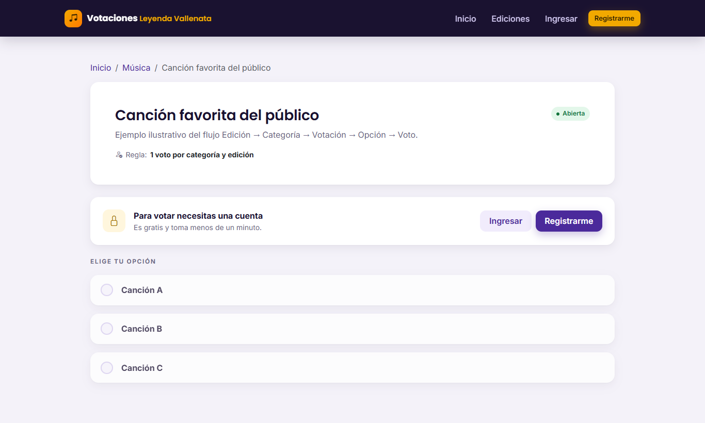
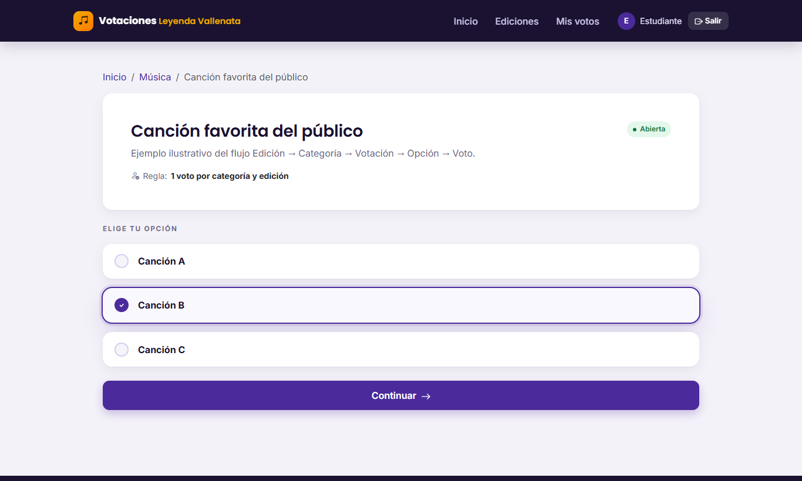
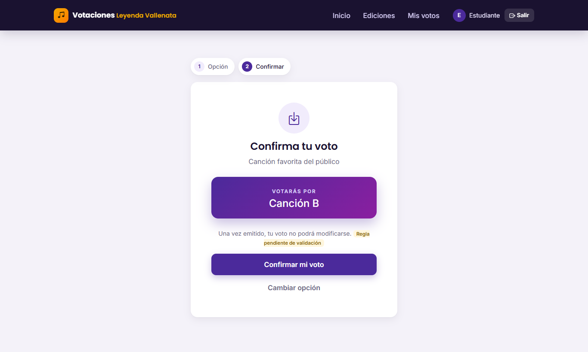
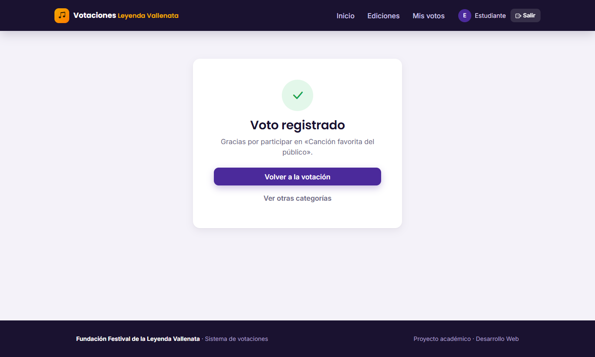
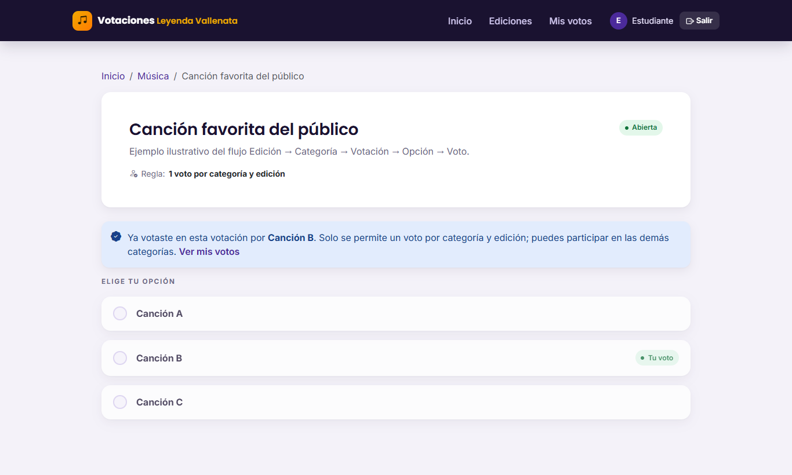
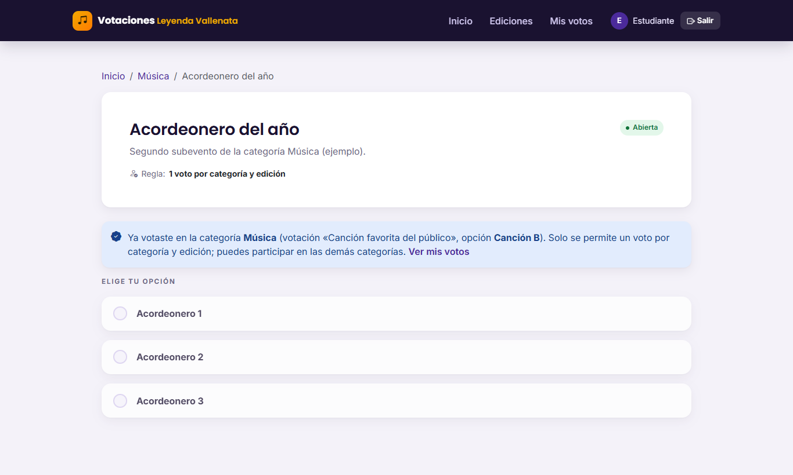
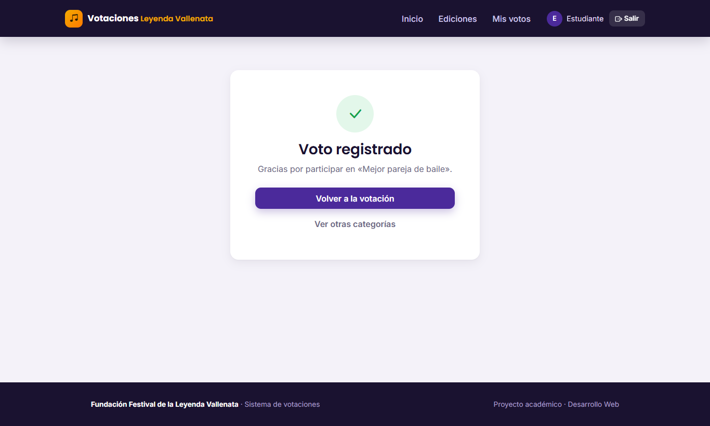
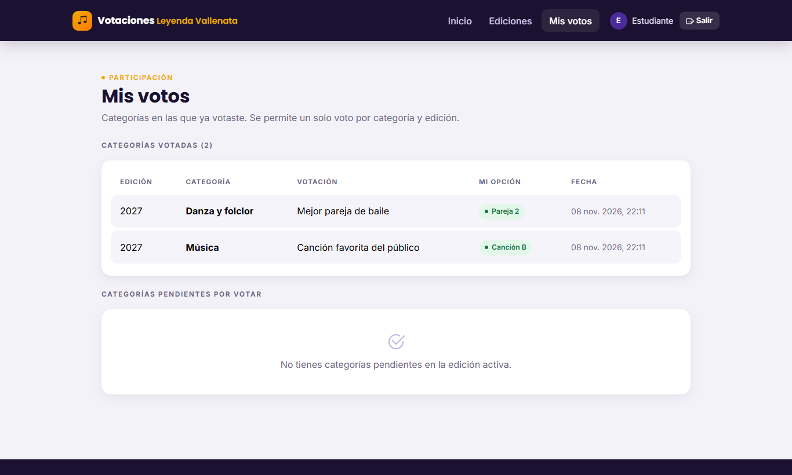
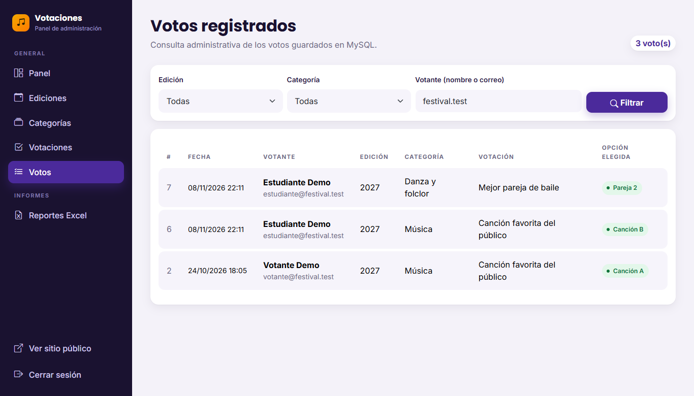
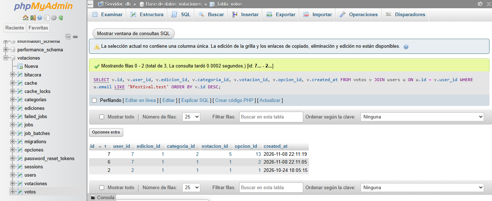
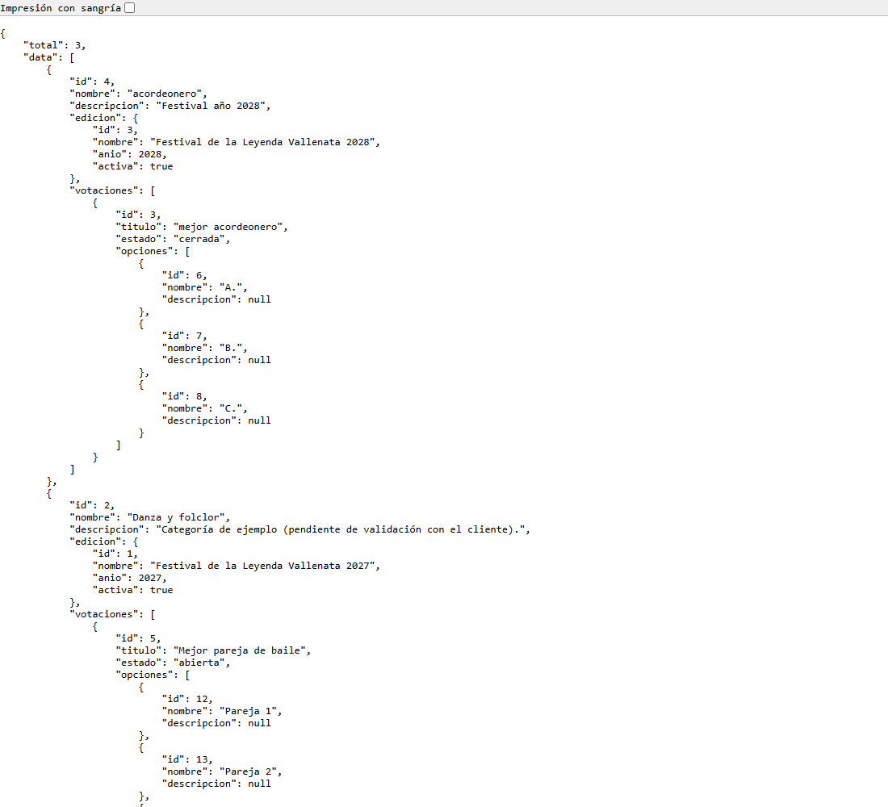
GET /api/categorias/ en el navegador. JSON válido con categorías, edición, votaciones y opciones reales leídas de MySQL (id y nombre coinciden con la base).Las diez pruebas funcionales (CP-01 a CP-10) están automatizadas en tests/Feature/Entrega3Test.php y se verificaron además con solicitudes reales contra el servidor con MySQL. Estado: todas aprobadas.
| Caso | Procedimiento | Resultado esperado | Resultado obtenido | Estado | Evidencia |
|---|---|---|---|---|---|
| CP-01 | Usuario autenticado selecciona una opción válida y confirma. | Se registra un voto en MySQL. | Voto guardado con usuario, edición, categoría, votación y opción. | Aprobado | Fig. 6-8, Fig. 14 PHPUnit CP-01 Video [mm:ss] |
| CP-02 | Intenta votar otra vez en la misma categoría, con otra opción o en otro subevento. | Se rechaza el segundo voto. | Mensaje «Ya votaste en esta categoría…»; sigue existiendo un solo voto. | Aprobado | Fig. 9-10 PHPUnit CP-02 Video [mm:ss] |
| CP-03 | Vota en una categoría diferente. | Se permite el voto. | Voto registrado en «Danza y folclor». | Aprobado | Fig. 11-12 PHPUnit CP-03 Video [mm:ss] |
| CP-04 | Usuario no autenticado intenta votar (formulario y POST directo). | Se exige autenticación. | Formulario bloqueado; el POST responde HTTP 302 a /ingresar. | Aprobado | Fig. 4, Tabla 6.1 PHPUnit CP-04 Video [mm:ss] |
| CP-05 | Intenta votar en una categoría no habilitada y en una votación cerrada. | Se rechaza la operación. | «Esta categoría no está habilitada para votar.» y «Esta votación no está abierta.» | Aprobado | Tabla 6.1 PHPUnit CP-05 Video [mm:ss] |
| CP-06 | Envía por POST una opción que pertenece a otra categoría. | Se rechaza la operación. | «La opción no pertenece a esta votación.» No se crea ningún voto. | Aprobado | Tabla 6.1 PHPUnit CP-06 Video [mm:ss] |
| CP-07 | El usuario consulta sus categorías votadas. | Se muestran registros correctos. | «Mis votos» lista solo los votos del usuario, con su opción y fecha. | Aprobado | Fig. 12 PHPUnit CP-07 Video [mm:ss] |
| CP-08 | El administrador consulta los votos. | Los datos coinciden con MySQL. | Mismos registros que la consulta SQL directa; un votante recibe HTTP 403. | Aprobado | Fig. 13-14 PHPUnit CP-08 Video [mm:ss] |
| CP-09 | Se envían dos o más solicitudes simultáneas a la misma categoría. | Solo queda un voto válido. | 10 solicitudes simultáneas: 1 voto registrado y 9 rechazadas; en MySQL queda 1 voto. | Aprobado | Tabla 6.2 PHPUnit CP-09 Video [mm:ss] |
| CP-10 | Se consulta GET /api/categorias/. | JSON válido con categorías y opciones reales. | HTTP 200, application/json, 3 categorías con sus votaciones y opciones. | Aprobado | Fig. 15 PHPUnit CP-10 Video [mm:ss] |
Solicitudes POST enviadas al servidor en ejecución (Docker + MySQL), con datos temporales creados solo para la prueba y eliminados después:
CP-04 | POST /votaciones/1/votar sin iniciar sesion | HTTP 302 -> /ingresar CP-05a | POST a votacion CERRADA | HTTP 200 -> Esta votación no está abierta. CP-05b | POST a categoria NO HABILITADA | HTTP 200 -> Esta categoría no está habilitada para votar. CP-06 | POST con opcion de OTRA categoria | HTTP 200 -> La opción no pertenece a esta votación. CSRF | POST autenticado SIN token CSRF | HTTP 419 (Page Expired)
Se envían 10 solicitudes POST a la vez (hilos con barrera de sincronización) con la misma sesión de un usuario nuevo, contra la misma categoría. Script: docs/entrega3/prueba_concurrencia.py en el repositorio.
Solicitudes simultaneas enviadas: 10 RECHAZADO (ya votaste en la categoria): 9 VOTO REGISTRADO: 1 Votos guardados en MySQL para ese usuario en la categoria: 1
Comando: php artisan test (22 pruebas: las 10 de esta entrega y las 12 de las entregas anteriores).
Entrega3 ✔ Cp01 voto valido se registra ✔ Cp02 segundo voto en la misma categoria es rechazado ✔ Cp03 otra categoria se permite ✔ Cp04 no autenticado debe iniciar sesion ✔ Cp05 categoria no habilitada se rechaza ✔ Cp06 opcion de otra categoria se rechaza ✔ Cp07 usuario consulta sus categorias votadas ✔ Cp08 administrador consulta los votos ✔ Cp09 la base de datos impide votos duplicados ✔ Cp10 api devuelve categorias y opciones (Reporte Excel: 3 · Votacion: 8) OK (22 tests, 90 assertions)
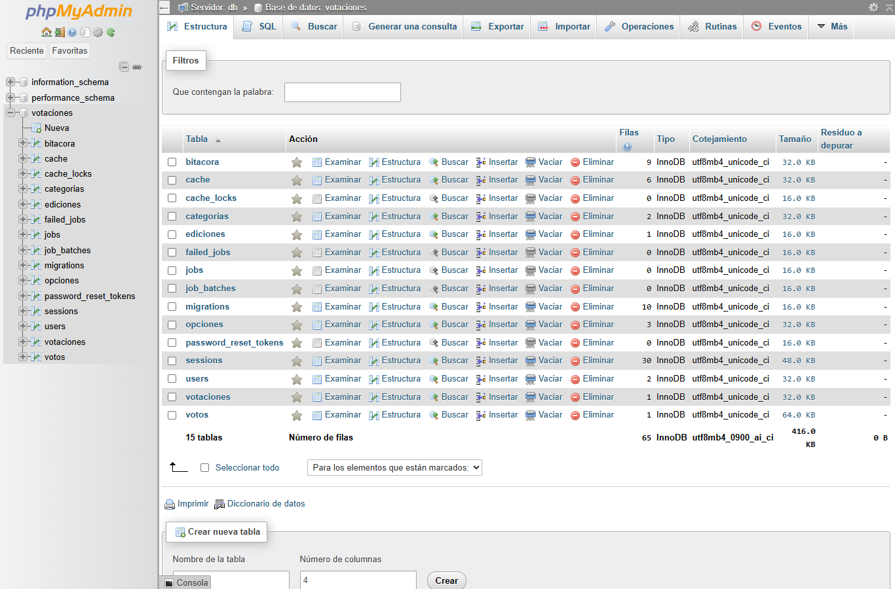
votaciones en MySQL. Tablas del modelo con datos reales de la aplicación (ediciones, categorías, votaciones, opciones, votos y usuarios).localhost y se documenta cómo reproducirla.| Integrante | Aportes |
|---|---|
| [Integrante 1] | [Describir aportes] |
| [Integrante 2] | [Describir aportes] |
| [Integrante 3] | [Describir aportes] |
| [Integrante 4] | [Describir aportes] |
Sustentación: [Delegado del equipo / todos los integrantes]